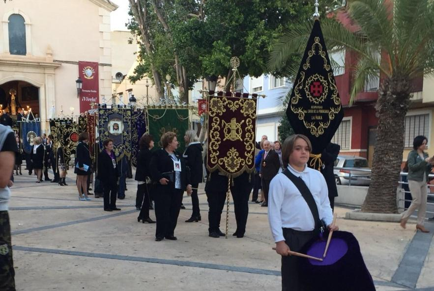

La Semana Santa de La Ñora es una celebración religiosa de gran arraigo y devoción en esta localidad murciana. Durante estos días, las calles se llenan de fervor con procesiones solemnes en las que desfilan impresionantes pasos portados por los nazarenos. Las distintas hermandades y cofradías organizan los actos litúrgicos, destacando la Pasión, Muerte y Resurrección de Cristo. La imaginería, de gran valor artístico, es una muestra del profundo sentimiento religioso de la comunidad.